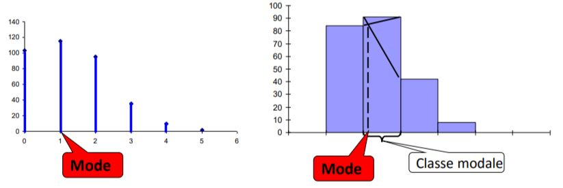
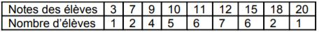

Caractéristiques de Tendance Centrale
Contenu
Caractéristiques de Tendance Centrale¶
Les représentations graphiques ont permis une première synthèse visuelle de la distribution des observations.
Un paramètre statistique permet de résumer par une seule quantité numérique une information contenue dans une distribution d’observations.!
Avertissement
Les paramètres statistiques ne concernent que les variables quantitatives
Le mode (m)¶
Définition
Le mode d’une distribution statistique est la valeur du caractère la plus fréquentée
On note généralement le mode d’une série donnée par m .
Une distribution est unimodale si elle présente un maximum marqué, et pas d’autres maxima relatifs.
La lecture s’effectue sur le diagramme en bâtons ou l’histogramme.
Le mode correspond à l’abscisse du maximum, c.à.d. la valeur la plus fréquente
Le mode (m)
Cas d’une var. quant. Discrète
\( f_{i}(x_{i}) \) \(\leq\) \( f_{i_{0}}(x_{i_{0}}) \) ; \(\forall\) i ={1, 2, …, N} \(\Rightarrow\) m = \(x_{i_{0}}\)
On parle dans ce cas de la valeur modale.
Cas d’une var. quant. cont.
\( f^c_{i}(x_{i}) \) \(\leq\) \( f^c_{i_{0}}(x_{i_{0}}) \) ; \(\forall\) i ={1, 2, …, N} \(\Rightarrow\) m \(\in\) \([x_{i_{0}-1}, x_{i_{0}}[\)
On parle dans ce cas de classe modale.
La valeur exacte du mode peut être retrouvée graphiquement à l’aide de l’histogramme ou un développement mathématiquement (Voir TD)
Si la distribution présente 2 ou plus maxima relatifs, on dit qu’elle est bimodale ou plurimodale.
La population est composée de plusieurs sous-populations ayant des caractéristiques de tendance centrale différentes.

Les différentes types de moyennes¶
La moyenne arithmétique simple (\(\overline{x}\))¶
La moyenne arithmétique simple \(\overline{x}\)
La moyenne arithmétique simple est une caractéristique de tendance centrale qui est proche (au centre) de toutes les observations
On note la moyenne arithmétique simple d’une série statistique par le symbole \(\overline{x}\)
Pour calculer une moyenne, on effectue le calcul suivant :
Série brute: \(\overline{x} = \frac{1}{N} \sum^{N}_{i=1} x_{i}\)
La moyenne arithmétique simple \(\overline{x}\)
Série groupée (var. quant. discrète):
Série groupée (var. quant. continue)
ou \(c_{i}\) est le centre de la classe [\(x_{i-1}\),\(x_{i}\)[
Les différentes types de moyennes
Moyenne géométrique (G)
Utilisée dans le cas de phénomènes multiplicatifs
La moyenne géométrique s’utilise, par exemple, quand on veut calculer la moyenne de taux d’intérêt, taux de croissance moyen …etc.
Moyenne harmonique (H)
Utilisée dans le cas où l’on combine deux variables sous forme de rapport (pièces/heure, km/litre,…)
Moyenne quadratique (Q)
Une moyenne qui trouve des applications lorsque l’on a affaire à des phénomène présentant un caractère sinusoïdal avec alternance de valeurs positives et de valeurs négatives (très utilisée en physique, électricité, …etc).
La médiane M¶
La médiane M
La médiane d’une série statistique notée généralement par M est la valeur du caractère qui répartie la population en deux sous-parties égales.
Var. quant. discrète
Médiane pour le cas d’une var. quant. discrète.
a. Observations non groupées
b. Observations groupées
\(F_{i-1}(x_{i_{0}-1})\) \(\leq\) 0.5 \(<\) \(F_{i}(x_{i_{0}})\) \(\Rightarrow\) M = \(x_{i_{0}}\)
Var. quant. continue
\(F_{i-1}\) \(\leq\) 0.5 \(<\) \(F_{i}(x_{i_{0}})\) \(\Rightarrow\) M \(\in\) \( [x_{i_{0}-1}, x_{i_{0}}[\)
On parle dans ce cas de la classe médiane \( [x_{i_{0}-1}, x_{i_{0}}[\).
La valeur exacte peut être retrouvée graphiquement à l’aide de l’histogramme ou mathématiquement par interpolation linéaire ou encore par l’intersection des courbes des fréquences cumulées croissantes (F) et celles des fréquences cumulées décroissantes (G) (Pour plus de détails, voir TD).
Exercice 4: CTC
Les notes d’une classe à un contrôle en économie contemporaine a donné lieu à la répartition suivante :

a) Calculer la moyenne arithmétique simple. Commenter
b) Calculer le mode. Commenter
c) Calculer la médiane. Commenter.
Exercices d’applications¶
Exercice 01¶
Exercice
Vous avez les données suivantes concernant les notes d’un groupe d’étudiants :
Notes : 3, 8, 12, 15, 17, 19, 20
Effectifs : 6, 4, 6, 10, 8, 2, 1
Identifier la variable étudiée et son type.
Récapituler ces données dans un tableau statistique
Calculez manuellement et sous python les fréquences et les fréquences cumulées croissantes
Calculer manuellement et sous python la moyenne arithmétique simple \(\overline{x}\)
Calculer manuellement et sous python le mode.
Calculer manuellement et sous python la médiane.
Exercice 02¶
Exercice
Vous disposez des données suivantes concernant les températures maximales mensuelles dans une ville :
Températures (°C) : 18, 22, 25, 27, 30
Effectifs (mois correspondants) : 3, 4, 5, 2, 3
Calculez les fréquences des différentes températures.
Calculez manuellement et sous python les fréquences cumulées croissantes
Calculer manuellement et sous python la moyenne arithmétique simple \(\overline{x}\)
Calculer manuellement et sous python le mode.
Calculer manuellement et sous python la médiane.
Exercice 03¶
Exercice
Vous avez les données suivantes concernant les tailles des individus dans une population :
Tailles (en cm) : 150-160, 160-170, 170-180, 180-190, 190-200
Effectifs (individus dans chaque tranche de taille) : 12, 25, 30, 15, 8
Calculez les fréquences des différentes tranches de tailles.
Calculez manuellement et sous python les fréquences cumulées croissantes
Calculer les valeurs centrales des tranches de tailles.
Calculer manuellement et sous python la moyenne arithmétique simple \(\overline{x}\)
Calculer manuellement et sous python le mode.
Calculer manuellement et sous python la médiane.
Représentez la courbe des fréquences cumulées croissantes pour illustrer la répartition cumulative des individus par taille.
Exercice 04¶
Exercice
Les données suivantes concernent la durée des trajets domicile-travail (en minutes) d’une population d’employés :
Durée des trajets (en minutes) : 0-10, 10-20, 20-30, 30-40, 40-50
Effectifs (employés correspondant à chaque intervalle de temps) : 20, 50, 40, 25, 10
Calculez les fréquences pour chaque intervalle de durée de trajet.
Créez la représentation graphique adéquate pour afficher la répartition des employés en fonction de la durée des trajets.
Calculez les caractéristiques de tendence centrales
Représentez la courbe des fréquences cumulées croissantes pour illustrer la répartition cumulative des individus par durée de trajet.